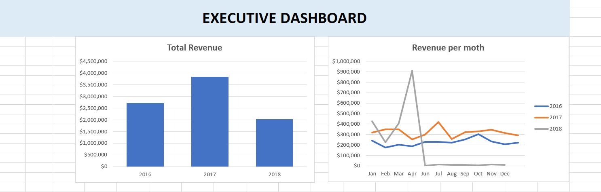
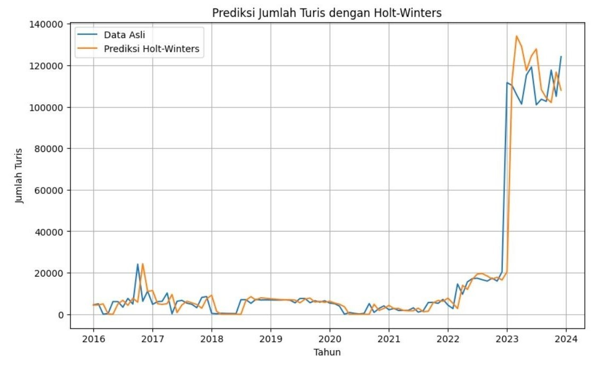
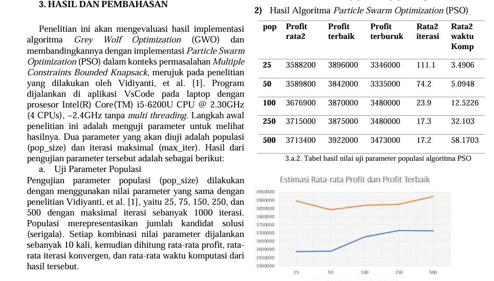

Hi, I'm Jihan, a 5th-semester Computer Science student at Universitas Pertamina. I'm passionate about data analysis and data science, and I'm always eager to learn more. Currently, I'm diving into machine learning to expand my skills and apply them to real-world projects.
| Title | Tools and Environment | Sites |
|---|---|---|
| Exercise Project - Revenue Analysis of Bicycle Shops in the US | SQL and Excel | Revenue Analysis |
|
Analyze bicycle shops in the US, displaying insights based on total revenue, revenue per month, revenue per state, etc. This information aids bicycle companies in decision-making.  |
||
| Hands-On Project - Prediction of Domestic Tourists in Denpasar in 2024 Using Holt-Winters Compared with Prediction Using SARIMA | Jupyter | Tourist Prediction |
|
Predicting domestic tourists in Denpasar city using the Holt-Winters additive algorithm, compared with the SARIMA algorithm, based on data from 2016 to 2023.  |
||
| Hands-On Project - Profit Optimization in Citra Tani Shop Using PSO Compared with Optimization Using GWO | Python | Profit Optimization |
|
Optimizing profits at Citra Tani stores using PSO and GWO algorithms. Each algorithm provides output parameters to achieve the highest profit. < /a> |
||